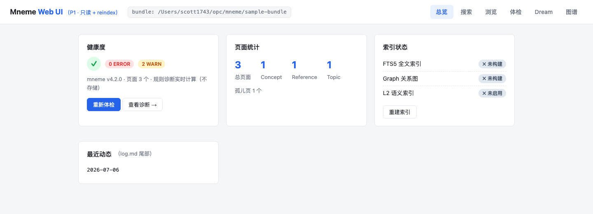
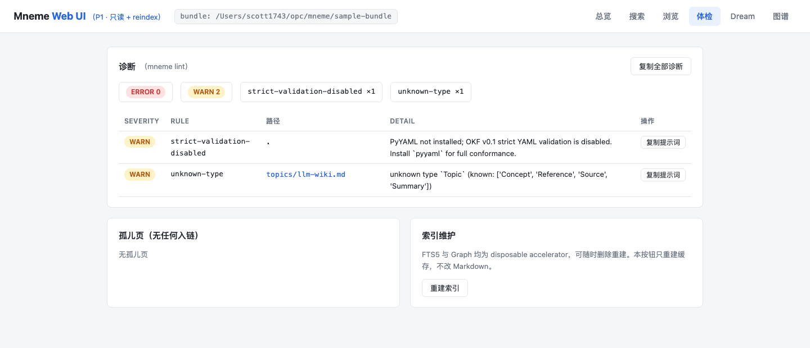
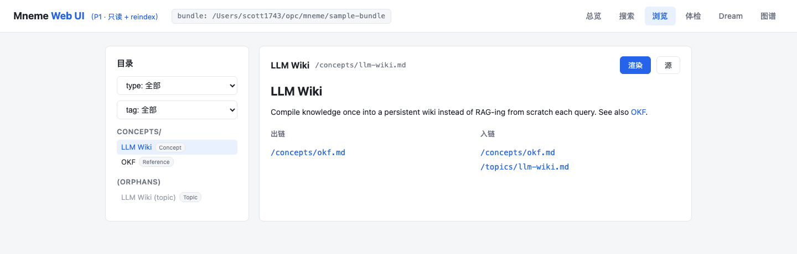

An agent skill · MIT · v4.8.1
Mneme
让 agent 替你记着点的本地 Markdown 知识库。
白天 mneme 一下它就记住，深夜它自己 dream 整理，你问它 search 就答——想自己看，就推开 serve 这扇窗。
I. Why this exists
让知识留在你手里。
RAG 是冷的缓存。你三周前读过的论文里那句话，跟你今天写的那段代码——它不知道。除非那句话被你写进过某个属于你的地方。跟 agent 说一句，它就替你记进一棵本地 Markdown 树；search 在那棵树上走，agent 不用每次从零开始。
这棵树只用三种规则（YAML frontmatter、一个 type 字段、保留 index.md 与 log.md），全部来自 OKF v0.1。普通目录，能 cat、git clone、diff blame branch，能被你写的脚本解析。LLM Wiki 的这个思路最早由 Karpathy 在 2026 年 4 月的 gist 里摊开——Mneme 只是把它做成一个能落到 ~/.claude/skills/mneme/ 的小工具。
II. First prompts
一行命令，然后去跟你的 agent 聊。
重启 agent 会话。想记住什么，跟它说一句；想找回来，问它一句——写是对话，不是命令。
mneme · 记
说一句，它就记住
论文、网页、对话、PDF——跟 agent 说「mneme 一下」。它先给你一份预览（建哪些页、改哪些页、tag 怎么设），并优先复用已有词汇：通常每页 1–3 个 tag，富化图谱只留少量有证据的实体与关系。你点头才落盘。
search · 读
在树里走
你问一个问题，agent 沿 index.md、tags 与 Graph 走，读完整页 再回答——而不是把命中的 chunk 拼回来。引用使用以 / 开头的 bundle-relative 路径。
把刚读的这篇 OKF v0.1 编进我的 wiki，
按 Source 摘要成概念页。
mneme dream 永远是 read-only 报告，没有 --apply 这种写入捷径——落不落盘由你决定，不是脚本。
III. The console
想自己看一眼 wiki 的时候，不必开一场 agent 会话。
mneme serve --open 给这座 wiki 开了一扇窗：浏览器里就是你的知识库——健康度一屏看完，搜索即问即答，页面点着链接逛，诊断列成表。图谱关系可按「基础」「富化」或「合并」切换；完整 Graph 会铺在一张可平移缩放的地图上，默认镜头只看局部，右下角小地图负责全局定位。你也可以适配全图、钻进当前邻域、收起详情或进入全屏。点开节点或关系，就能回到证据与来源页面。
基础层来自 Markdown 页面、tags 与链接，随时可以重建；富化层只接收你在 dream 预览里批准过的 agent 提取。没有富化时，「发起 dream」会先让 agent 挑最多 5 页生成实体、关系、证据和置信度预览，你批准后才 ingest；面板不会替你编造关系。只读审计会指出重复或单例 tag、超预算页面与漂移的关系谓词，让 agent 先复用这座 wiki 已有的语言，而不是越整理词越多。v4.8 里，显式启用 L2 后，搜索不再丢掉原有路径，而是把 Graph、FTS5 与 L2 合成完整 Hybrid；本地分组交叉验证选出的默认配比是 0.75 / 0.10 / 0.15，相较旧配比把 case-macro MRR 从 0.792 提升到 0.818，7 个精确标题仍全部 Top-1。v4.8.1 又把 auto 明确定义为自动路由：它保留当前 L2 激活状态，不改配置，也不重建索引。「重建索引」会按当前能力状态刷新全部缓存：启用 L2 时重建 L2、FTS5 与 Graph，否则重建 FTS5 与 Graph；任何 L2 错误都会直接显示。页眉和浏览器标题会直接告诉你当前运行的 Skill 版本；面板与 lint 使用同一套孤儿页判定。
看到不顺眼的，点一下「复制提示词」，丢给 agent 就开工。它只读你的 wiki，不动一个字——写，永远等你点头。



不用装任何东西，不联网，不用的时候 Ctrl-C，就当它没来过。mneme 记，dream 整理，search 读——serve 是这一切的那扇窗。
IV. Friends of Mneme
同门师兄弟：森林密语。
森林密语 / 塔罗树洞 · tarot-confessional
同一套"本地优先 / Agent 驱动 / 可检查的开放文件"原则，用在塔罗解读与长会话的体会整理上。两边都坚持：本地优先、写入显式——你不主动"保存到 Wiki"，什么都不会被留下。Mneme 提供整理工具；森林密语 提供抽牌码与象征性解读。
仓库：github.com/Scott1743/tarot-confessional
落地页：scott1743.github.io/tarot-confessional
安装：npx skills add Scott1743/tarot-confessional